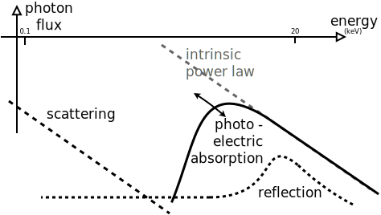
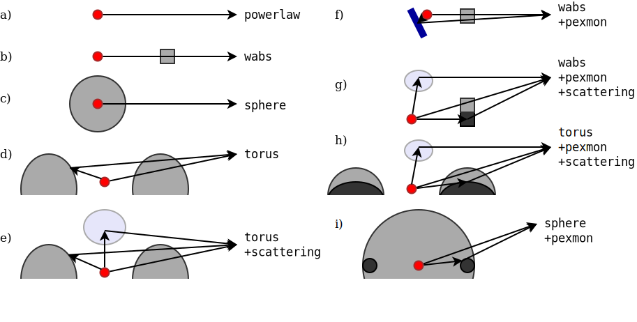
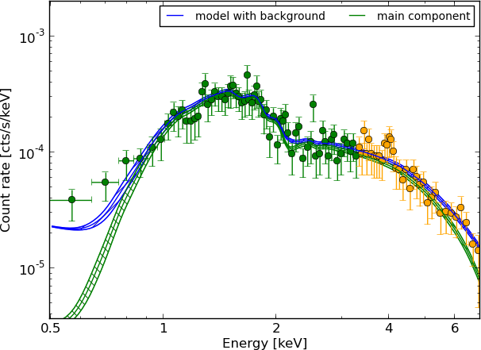
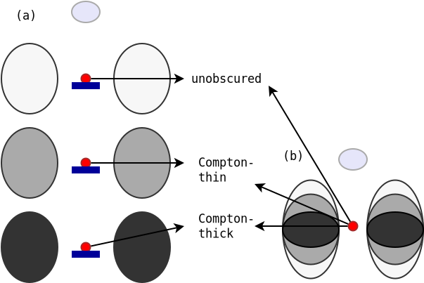
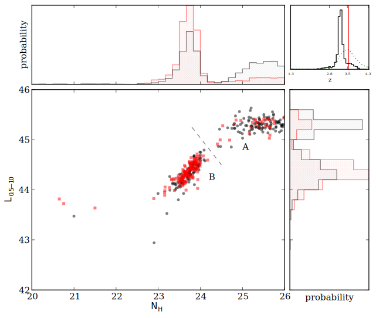
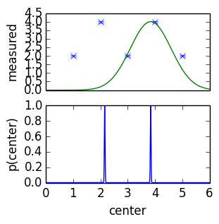
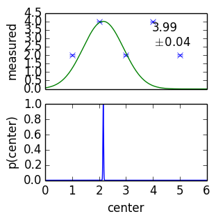
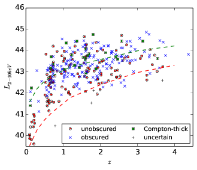
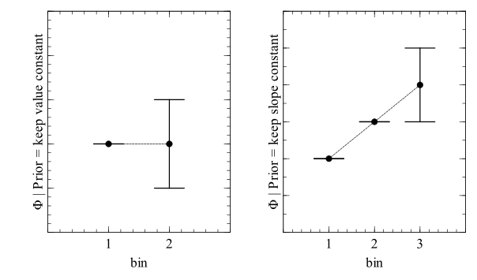

XLF
X-ray AGN Workshop / Apr 2014
Johannes Buchner
in collaboration with A. Georgakakis, K. Nandra, L. Hsu, S. Fotopoulou, C. Rangel, M. Brightman, A. Merloni and M. Salvato
Part I: Spectral Analysis
Buchner et al 2014: ArXiV:1402.0004
Chandra background model

larger extraction region, fitted. GoF methods
What is the right model for AGN?
What is the not-so-wrong model for AGN? 
Model selection 
Example - Source 179 z=0.605, 2485 counts
wabs
Example - Source 179 z=0.605, 2485 counts
torus+scattering

Example - Source 179 z=0.605, 2485 counts
torus+pexmon+scattering

Model selection results in the CDFS
torus+pexmon+scattering is the most probable model
Also for CT
Also for
What does it mean?
-  intrinsic powerlaw
- cold absorbed with Compton scattering,
- additional cold reflection
- soft scattering powerlaw
scattering - softer HR -> underestimate NH
cold absorption - steeper photon index
Fine, so let's just fit...

dual solutions
Fine, so let's just fit...
dual solutions; photo-z: pdf
Photo-z PDF: model misspecification
 - wrong model, but useful
- small measurement errors - tiny uncertainties
- second peak is highly sensitive
- increase errors by some chosen values (systematic)
Photo-z PDF:
(Hsu+14, submitted)
- Add systematic uncertainty
- How useful is the second peak really?
Given this ...
(Only a problem in few sources)Have for every object
More: Buchner et al. 2014
ArXiV:1402.0004
Goodness of Fit, Parameter estimation, Model comparison methods, Model verification, Model discovery
Model comparison of the obscurer of AGN in the CDFS
Part II: from samples to populations
Population properties vs Sample statistics
Sample is drawn from population: is it just a peculiar draw?
Estimate of density as a function of properties
What is ?
Even when no selection bias, and perfect knowledge of the objects
has uncertainty
is not a real thing
It is the tendency, or propensity
of a process to form/place objects
with properties (L, z, NH, ...).
Likelihood for LF
Loredo+04:
Poisson. Kelly+08 for Binomial derivation: difference:
Normalisation is sampled separately. Poisson sufficient.
LF estimation: numerical likelihood
Fast to compute. Takes 10 minutes for LDDE with full dataset.
Likelihood in practice
Astronomers use:
Read Loredo+04 for detailed explanation.
Why do people use the wrong formula?
Because it works
Posterior from spectral fitting can yield L=0
data is consistent with no AGN, only background
But it was detected with !
What went wrong here?
Why is L=0 allowed?
- detection in small area
- extraction in large area.
- 6 counts in small area by BG - tiny probability
- 9 counts in large area by BG - probable
- We forgot about spatial distribution of counts
- Right way: fit with PSF for source, flat profile for BG
Approximations to the right way
If you forgot the information, you can multiply to get crude estimate
Definition of AGN
Area curve ~ prob of detection, via torus model
What are we detecting?
= What are we computing the LF of
Definition:
- hard-band detected
- not a star
- not a galaxy (e.g. Xue+11: )
Selection
Example: CDFS
- 569 detected
- 530 have z information
- 526 of these have X-ray extracted
- 502 are not stars
- 376 are not galaxies
Selection
Example: CDFS- what about the ones that do not have z information?
- what about those without X-ray data extracted?
Correct: use no z information (flat)
Analyse (lack of) data
Priors & Hierarchical Bayes
We used priors in the normalisation, z, , before considering data
But LF should be the prior!
i.e. the population propensity
Priors & Hierarchical Bayes
Divide prior away again. Hierarchical Bayes with Intermediate priors.
for uniform priors in P=: no problem, is a constant, because is defined in these units
use uniform priors in photo-z
Hierarchical Bayes
Two, equally probable solutions!
Probability is not a frequency, but a state of information
but: law of large numbers: more combinations in the middle
Binning and Visualisation
probability clouds in
which pidgeon hole (bin) to stuff each object in? (for plotting)
- interpret as frequency - weight
- bootstrap (also frequency interpretation)
- cumulative view: number of objects for which ?
modeling
modeling is safer: incorporates the probabilities correctly
Output is density function, can be easily understood directly
Problems:
- is the model right?
- where is the model wrong?
- how to discover new models?
non-parametric parametric approach
model is the field to recover itself
Simple approach: 3d histogram, bin values are the parameters
L=42...46 (11 bins)
z=0.001...7 (11 bins)
NH=20...26 (6 bins)
-- ~1000 parameters.
underdefined problem.
smoothness priors
Additional knowledge: Smoothness in

- other options: IFT, NIFTY: recover field independent of grid-choice
- later: use model (less sensitive to prior choice)
- compute Z, compare models
Summary
- Every point has subtleties. No-one has done all of them right so far.
- We are getting closer.